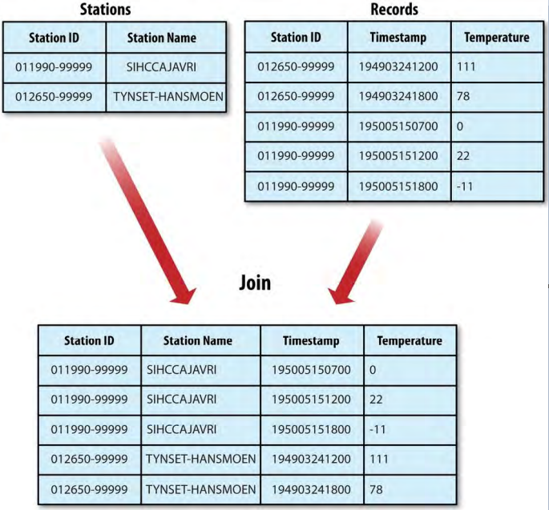

3、Joins
MapReduce可以执行大数据集之间的连接，但是从零开始写连接的代码相当复杂。所以不应该写MapReduce程序，而应该优先考虑使用高级框架如Pig、Hive、Cascading、Cruc或者Spark，在它们的实现中连接操作是一个核心部分。
假如，有两个数据集——气象站数据和气象记录——想要合并两个数据集。或者，想要查看每个气象站的气象记录，并且每条输出记录都包含气象站的元数据。如图9-2所示：
图9-2.Inner join of two datasets

要根据数据集的大小和数据集分区决定如何实现连接。如果一个数据集很大（气象记录）但是另一个非常小，小到能够分发到集群中的每个节点（像气象站元数据），连接会被将每个气象站数据合并到一起（例如基于气象站ID的部分排序）的MapReduce影响。mapper或者reducer使用较小的数据集为某个气象站ID查找对应的气象站元数据，所以可以用每条记录写出。
如果连接由mapper执行，它叫做map-side join，而由reducer执行的连接叫做reduce-side join。
如果两个数据集都非常大，而不能将某一个复制到集群中的每个节点，也可以根据数据的构造使用MapReduce的map-side或者reduce-side连接对它们进行连接。这种情况的一个通用的例子是用户数据库和某些用户活动日志（例如访问日志）。对于流行的服务，将用户数据库（或者日志）分布到所有的MapReduce节点是不可行的。
3.1、Map-Side Joins
大数据集的map-side连接通过在数据到达map函数之前执行连接实现。为了能够运行连接，每个map的输入必须以特定的方式进行分区和排序。每个输入数据集必须划分为相同数量的分区，并且在每个数据源中按照相同的键（连接键）进行排序。特定键的所有记录必须在相同的分区中。这似乎是一个严格的需求（的确是），但是事实上符合MapReduce job输出的描述。
map-side连接可以用于连接几个job（有相同数量的reducers和相同的键，并且输出文件不可切分——因为比一个HDFS block小或者是gzip格式压缩的）的输出。在气象数据的例子中，如果根据气象站ID对气象站文件进行部分排序，并且在气象记录上进行等价的排序（也按照气象站ID并且有相同数量的reducers），那么这两个输出能够满足运行map-side连接的条件。
使用org.apache.hadoop.mapreduce.join包中的CompositeInputFormat来运行map-side连接。CompositeInputFormat的输入源和连接类型（inner或者outer）通过根据简单语法写的join表达式指定。对应包有详细的说明和例子。
例子org.apache.hadoop.examples.Join是一个通用的用于运行map-side连接的命令行程序，使用它可以基于多个输入为任何指定的mapper和reducer运行一个MapReduce job。
3.2、Reduce-Side Joins
reduce-side连接比map-side连接更为普遍，因为输入数据集不必以任何特定方式构建，但是因为两个数据集都必须全部进行MapReduce混洗导致它比较低效。基本思想是mapper用数据源标记每条记录并且使用连接键作为map输出键，以便拥有相同键的记录会被一起送到reducer。实践中，使用如下几种方法来实现：
Multiple inputs
数据集的输入源一般有不同的格式，所以使用MultipleInputs类来分隔解析和标记每个数据源的逻辑非常方便。
Secondary sort
reducer会看到两个数据源中有相同键的记录，但是不保证以特定的顺序呈现。可是，为了执行连接，让一个数据源的数据出现在另一个数据源的数据之前是很重要的。对于气象数据连接，气象站记录必须每个键所见值中的第一个，以便reducer可以使用气象站名填充气象记录并且将它们发出。当然，如果把数据缓存在内存中，以任何顺序接收记录都是可能的，但是由于任何分组内的记录数量都可能非常大并且超过reducer可用的内存量，应该把数据避免缓存在内存中。
为了标记每条记录，键（存储气象站ID）和标签都使用TextPair。对标签值的唯一需求是它们以气象站记录优先于气象记录的方式排序。可以通过标记气象站记录为0气象记录为1实现。实现这个的mapper类如例9-9和9-10所示：
例 9-9.Mapper for tagging station records for a reduce-side join
public class JoinStationMapper
extends Mapper<LongWritable, Text, TextPair, Text> {
private NcdcStationMetadataParser parser = new NcdcStationMetadataParser();
@Override
protected void map(LongWritable key, Text value, Context context)
throws IOException, InterruptedException {
if (parser.parse(value)) {
context.write(new TextPair(parser.getStationId(), "0"),
new Text(parser.getStationName()));
}
}
}
例 9-10.Mapper for tagging weather records for a reduce-side join
public class JoinRecordMapper
extends Mapper<LongWritable, Text, TextPair, Text> {
private NcdcRecordParser parser = new NcdcRecordParser();
@Override
protected void map(LongWritable key, Text value, Context context)
throws IOException, InterruptedException {
parser.parse(value);
context.write(new TextPair(parser.getStationId(), "1"), value);
}
}
reducer知道它会先接收到气象站记录，所以它从值中获取它的名字并把它作为每条输出记录的一部分写出（例9-11）。
例 9-11.Reducer for joining tagged station records with tagged weather records
public class JoinReducer extends Reducer<TextPair, Text, Text, Text> {
@Override
protected void reduce(TextPair key, Iterable<Text> values, Context context)
throws IOException, InterruptedException {
Iterator<Text> iter = values.iterator();
Text stationName = new Text(iter.next());
while (iter.hasNext()) {
Text record = iter.next();
Text outValue = new Text(stationName.toString() + "\t" + record.toString());
context.write(key.getFirst(), outValue);
}
}
}
这段代码假设在气象记录中的每个气象站ID仅对应一条气象站数据集中的记录。如果情况并非如此，那么需要使用另一个TextPair把标签放进值对象，以使代码变得通用。然后，reduce()方法将能够分辨哪些条目是气象站名称并且在处理气象记录之前检测（和处理）丢失或者重复的条目。
警告：因为（为了高效的目录）reducer中值的遍历器对象是重用的，所以复制从值遍历器获取的第一个Text对象很重要：
Text stationName = new Text(iter.next());
如果没有作这个复制，当将stationName转换为字符串时，stationName引用会指向刚刚读取的值，这会是一个bug。
完整的驱动类如例9-12，关键点是使用自定义的Partitioner（KeyPartitioner）和自定义的分组comparator（FirstComparator）基于键的第一部分（气象站ID）进行分区和分组。
例 9-12.Application to join weather records with station names
public class JoinRecordWithStationName extends Configured implements Tool {
public static class KeyPartitioner extends Partitioner<TextPair, Text> {
@Override
public int getPartition(/*[*/TextPair key/*]*/, Text value, int numPartitions) {
return (/*[*/key.getFirst().hashCode()/*]*/ & Integer.MAX_VALUE) % numPartitions;
}
}
@Override
public int run(String[] args) throws Exception {
if (args.length != 3) {
JobBuilder.printUsage(this, "<ncdc input> <station input> <output>");
return -1;
}
Job job = new Job(getConf(), "Join weather records with station names");
job.setJarByClass(getClass());
Path ncdcInputPath = new Path(args[0]);
Path stationInputPath = new Path(args[1]);
Path outputPath = new Path(args[2]);
MultipleInputs.addInputPath(job, ncdcInputPath,
TextInputFormat.class, JoinRecordMapper.class);
MultipleInputs.addInputPath(job, stationInputPath,
TextInputFormat.class, JoinStationMapper.class);
FileOutputFormat.setOutputPath(job, outputPath);
/*[*/job.setPartitionerClass(KeyPartitioner.class);
job.setGroupingComparatorClass(TextPair.FirstComparator.class);/*]*/
job.setMapOutputKeyClass(TextPair.class);
job.setReducerClass(JoinReducer.class);
job.setOutputKeyClass(Text.class);
return job.waitForCompletion(true) ? 0 : 1;
}
public static void main(String[] args) throws Exception {
int exitCode = ToolRunner.run(new JoinRecordWithStationName(), args);
System.exit(exitCode);
}
}
运行输出：
011990-99999 SIHCCAJAVRI 0067011990999991950051507004...
011990-99999 SIHCCAJAVRI 0043011990999991950051512004...
011990-99999 SIHCCAJAVRI 0043011990999991950051518004...
012650-99999 TYNSET-HANSMOEN 0043012650999991949032412004...
012650-99999 TYNSET-HANSMOEN 0043012650999991949032418004...
4、Side Data Distribution
副数据（Side data）可以被定义为job需要的用来处理主数据集的额外的只读数据。挑战是使副数据（以便捷和高效的方式）对所有的（分布在整个集群中的）map或reduce tasks可用。
4.1、使用Job配置（Using the Job Configuration）
使用Configuration（老的MapReduce API的JobConf）的各种setter方法可以设置任意的键值对job配置。在需要往tasks中传递少量的元数据时，这种方式非常有用。
在task中，可以通过Context的getConfiguration()方法从配置中获取所传递的数据。（在老的API中，稍微有点复杂：在mapper或者reducer中重写configure()方法，并且使用传入的JobConf对象的getter方法来获取传递的数据。通常做法是，把数据保存在一个实例属性（instance field）中以便在map()或reduce()方法中使用。）
通常基本类型足以编码元数据，但是对于任意对象，可以自己处理序列化（如果有将对象转换为字符串并且转回的既存机制）或者使用Hadoop的Stringifier类。DefaultStringifier使用Hadoop的序列化框架来序列化对象。
不应该使用这种机制转化超过几KB的数据，因为它会给MapReduce组件中内存使用带来压力。客户端、application master和task JVM会经常去读job配置，每次都会把所有配置读取到内存中，即使不用。
4.2、分布式缓存（Distributed Cache）
比起把副数据序列化到job配置中，更好的方式是使用Hadoop的分布式缓存机制分发数据集。它提供一个复制文件并且当tasks运行时及时归档到task节点来让tasks使用的服务。为了节省网络带宽，每个job一般只将文件复制到任何特定节点一次。
4.2.1、使用（Usage）
对使用GenericOptionsParser的工具（包括GenericOptionsParser、Tool和ToolRunner），可以把将要分发的文件以一个逗号分隔的URIs集合的形式作为参数传递给-files选项。这些文件可以是在本地文件系统、HDFS或其它Hadoop可以读取的文件系统（例如S3）。如果不提供schema，会假设这些文件是本地文件（即使默认的文件系统不是本地文件系统）。
也可以使用-archives选项，复制归档文件（archive files）（例如JAR文件、ZIP文件、tar文件和gzipped tar文件）到tasks中，这些文件在task节点上未归档的（unarchive）。-libjars选项会将JAR文件添加到mapper和reducer tasks的classpath。如果job JAR文件中没有绑定库JAR文件，这个选项是有用的。
使用分布式缓存分析一个气象站名称元数据文件，使用的命令行如下：
% hadoop jar hadoop-examples.jar \
MaxTemperatureByStationNameUsingDistributedCacheFile \
-files input/ncdc/metadata/stations-fixed-width.txt input/ncdc/all output
这个命令会复制本地文件stations-fixed-width.txt（没有提供schema，所以路径被解释为本地文件）到task节点，可以使用它来查找站点名称，如例 9-13：
例 9-13.Application to find the maximum temperature by station，showing station names for a lookup table passed as a distributed cache file
public class MaxTemperatureByStationNameUsingDistributedCacheFile
extends Configured implements Tool {
static class StationTemperatureMapper
extends Mapper<LongWritable, Text, Text, IntWritable> {
private NcdcRecordParser parser = new NcdcRecordParser();
@Override
protected void map(LongWritable key, Text value, Context context)
throws IOException, InterruptedException {
parser.parse(value);
if (parser.isValidTemperature()) {
context.write(new Text(parser.getStationId()),
new IntWritable(parser.getAirTemperature()));
}
}
}
static class MaxTemperatureReducerWithStationLookup
extends Reducer<Text, IntWritable, Text, IntWritable> {
/*[*/private NcdcStationMetadata metadata;/*]*/
/*[*/@Override
protected void setup(Context context)
throws IOException, InterruptedException {
metadata = new NcdcStationMetadata();
metadata.initialize(new File("stations-fixed-width.txt"));
}/*]*/
@Override
protected void reduce(Text key, Iterable<IntWritable> values,
Context context) throws IOException, InterruptedException {
/*[*/String stationName = metadata.getStationName(key.toString());/*]*/
int maxValue = Integer.MIN_VALUE;
for (IntWritable value : values) {
maxValue = Math.max(maxValue, value.get());
}
context.write(new Text(/*[*/stationName/*]*/), new IntWritable(maxValue));
}
}
@Override
public int run(String[] args) throws Exception {
Job job = JobBuilder.parseInputAndOutput(this, getConf(), args);
if (job == null) {
return -1;
}
job.setOutputKeyClass(Text.class);
job.setOutputValueClass(IntWritable.class);
job.setMapperClass(StationTemperatureMapper.class);
job.setCombinerClass(MaxTemperatureReducer.class);
job.setReducerClass(MaxTemperatureReducerWithStationLookup.class);
return job.waitForCompletion(true) ? 0 : 1;
}
public static void main(String[] args) throws Exception {
int exitCode = ToolRunner.run(
new MaxTemperatureByStationNameUsingDistributedCacheFile(), args);
System.exit(exitCode);
}
}
这个程序按照气象站查找最大温度，所以mapper（StationTemperatureMapper）简单地发出（气象站ID，温度）对。对于combiner，重用MaxTemperatureReducer来在map侧从任何给定分组的map输出获取最大温度。reducer（MaxTemperatureReducerWithStationLookup）与combiner不同，因为除了找到最大温度，它使用缓存文件查找站点名称。
使用reducer的setup()方法用缓存文件的原始名称来获取缓存文件，相对于task的工作目录。
程序运行输出示例：
PEATS RIDGE WARATAH 372
STRATHALBYN RACECOU 410
SHEOAKS AWS 399
WANGARATTA AERO 409
MOOGARA 334
MACKAY AERO 331
注意：可以使用分布式缓存复制不能放进内存的文件。在这个方面Hadoop map文件非常有用，因为它们以磁盘上的查找格式提供（serve as an on-disk lookup format）。因为map文件是带有限定目录结构（defined directory structure）的文件集合，应该把它们放进一个归档格式（JAR、ZIP、tar或者gzipped tar）并且使用-archive选项把它们加到缓存中。
4.2.2、如何工作（How it works）
启动job时，Hadoop复制通过-archive、-files、-libjars指定的文件到分布式文件系统（一般是HDFS）。然后，在task运行前，节点管理器从分布式文件系统复制文件到本地磁盘——缓存——那么task就可以访问这些文件。这些文件这是可以说是本地化的（localized）。从task的视角来说，文件就在那里，象征性地链接自task的工作目录。此外，-libjars指定的文件会在task启动前加到task的classpath。
节点管理器也维护着一个（使用缓存中每个文件的tasks的数量）参考计数（reference count）。task运行前，文件参考计数增加1，然后，task运行后，count减1。只有缓存文件不再被使用（计数为0）可以删除这个计数。当节点的缓存超过一定大小——默认10GB——会用最少最近使用策略删除缓存的文件来为新的文件让出空间。缓存限制大小通过配置属性yarn.nodemanager.localizer.cache.target-size-mb改变。
尽管这个设计不保证相同节点上运行的相同job的后续tasks能够在缓存中找到它们需要的文件，但是，一个job的tasks通常被调度为差不多同时运行，所以，不会有机会因为其它jobs的运行导致原始task的文件被从缓存删除。
4.2.3、分布式缓存API（The distributed cache API）
大多数应用不需要使用分布式缓存API，因为它们通过GenericOptionsParser使用缓存。可是，如果不使用GenericOptionsParser，Job中的API可以用于把对象放进分布式缓存。如下为Job中的相关方法：
public void addCacheFile(URI uri)
public void addCacheArchive(URI uri)
public void setCacheFiles(URI[] files)
public void setCacheArchives(URI[] archives)
public void addFileToClassPath(Path file)
public void addArchiveToClassPath(Path archive)
要注意，两类对象可以放入缓存：文件和归档文件（archives）。在task节点上，文件是原始的，而归档文件是未归档（解封）的。API介绍如表 9-7:
| Job API method | GenericOptionsParser equivalent | Description |
|---|---|---|
| addCacheFile(URI uri) , setCacheFiles(URI[] files) | -files file1,file2,... | 把文件添加到分布式缓存以备复制到task节点 |
| addCacheArchive(URI uri) , setCacheArchives(URI[] files) | -archives archive1,archive2,... | 把归档文件添加到分布式缓存以备复制到task节点并且在task节点解封 |
| addFileToClassPath(Path file) | -libjars jar1,jar2,... | 把文件添加到分布式缓存以备添加到MapReduce task的classpath。这些文件不会被解封，所以这是把JAR文件添加到classpath的有用方式 |
| addArchiveToClassPath(Path archive) | None | 添加归档文件到分布式缓存以备解封并且添加到MapReduce的classpath。当要把一个目录的文件添加到classpath时很有用，因为可以创建一个包括这些文件的归档文件。或者，可以创建一个JAR文件并使用addFileToClassPath()，这也有等价的效果。 |
注意，add或set方法指向的URIs必须是在一个共享的文件系统中并且在job运行是存在。另外，通过GenericOptionParser选项指定的文件可以指向本地文件，这种情况下，这些文件会被复制到默认的共享文件系统（一般是HDFS）。这就是使用Java API和使用GenericOptionParser的关键不同。
从task获取分布式缓存文件以相同的方式运作：使用名称直接访问本地化的文件，如例9-13。这能够运行是因为MapReduce总是会创建从task的工作目录到每个添加到分布式缓存的文件或归档文件的象征性链接。归档文件不会被解封以便可以使用嵌套路径访问里面的文件。
5、MapReduce Library Classes
Hadoop自带了一个通用功能的mappers和reducers类库。如表 9-8:
表 9-8.MapReduce library classes
| Classes | Description |
|---|---|
| ChainMapper, ChainReducer | 在一个mapper中和一个reducer中分别运行一个mapper链，然后在一个reducer中运行一个mapper链。（符号表示：M+RM*，M是一个mapper，R是一个reducer。）与运行多个MapReduce job相比这能实质上地减少引发的磁盘I/O。 |
| FieldSelectionMapReduce (old API) ; FieldSelectionMapper 和 FieldSelectionReducer (new API) | 一个mapper和reducer从输入键和值选择属性（向Unix的cut命令）并且把它们以输出键和值发出。 |
| IntSumReducer, LongSumReducer | 汇总整数值以为每个键产生一个总数的reducers。 |
| InverseMapper | 交换键和值的mapper。 |
| MultithreadedMapRunner (old API) , MultithreadedMapper (new API) | 在独立线程中同时运行mappers的一个mapper（或者旧API中的map runner）。对非CPU-bound的mappers有用。 |
| TokenCounterMapper | 使输入值标记化为词（使用Java的StringTokenizer）并且将每个词和一个计数1一起发出的mapper。 |
| RegexMapper | 找到输入值中匹配正则表达式的值并将匹配值和计数1一起发出的mapper。 |